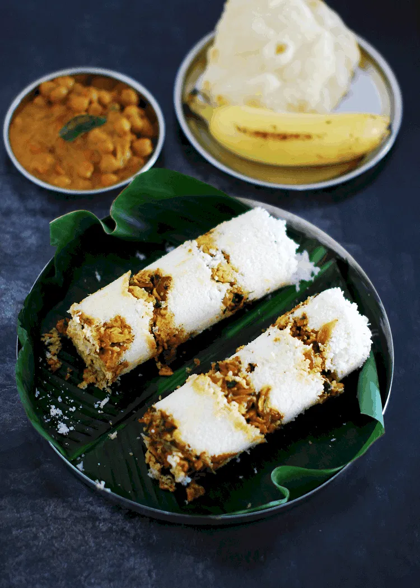

Mutta Puttu

Description
A healthy, tasty and filling breakfast recipe. Traditional Kerala Breakfast – Puttu, made with rice flour, coconut and egg masala filling.
Ingredients
- For Puttu
- 2 cups Puttu podi
- 3/4 – 1 cup Grated Coconut
- 1/2 – 3/4 cup Water
- Salt
- For Mutta(Egg) Masala
- 4 Eggs
- 1 medium – big Onion sliced
- 1 medium Tomato chopped
- 1/2 tsp each crushed Ginger & Garlic
- 1/4 tsp Turmeric powder
- 1/2 tsp Chili powder
- 1/2 tsp heaped Coriander powder
- Salt
- Pepper
Steps
For Mutta(Egg) Masala
- Add salt & pepper to eggs & beat well. Heat oil in a pan and make scrambled eggs. Keep it aside.
- In the same pan, add some more oil and add sliced onion. Cook till it becomes golden brown.
- Add crushed ginger & garlic. Cook for 3 – 4 minutes, until the raw smell goes.
- Add the masala powders & fry for 2-3 minutes, until the oil starts appearing.
- Add chopped tomato and salt. Mix well. Add a little water (around 2-3 tbsp) to make it a bit pasty. Cook till tomato becomes soft.
- Add scrambled eggs & mix well. Cook for one more minute and remove from fire. Note that it should not be too watery or too dry.
For Puttu
- Add salt to the puttu podi and mix well. Add water little by little till the powder becomes moist/wet. Add half of the grated coconut to this & mix well. If too much of lumps is formed just run it in your blender/food processor for a few seconds. Keep aside the puttu mix for 10 minutes.
- Fill the puttu kutti (mould/maker)
- Put one tbsp of coconut as the first layer. Add 2 tbsp of egg masala as the second layer. The third layer should be 4-5 tbsp of puttu mix. Repeat the process, till the mould is filled. Make sure that the mould is not tightly packed. Cover the mould with the lid. Fill water in puttu kudam (pot). Place the puttu kutti on puttu kudam. Cook it on medium flame for around 5-7 minutes, or until the steam comes through. Serve hot/warm with banana or curry of your choice.